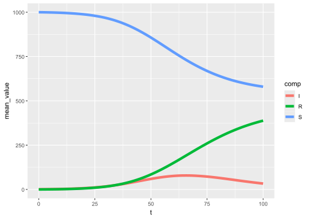
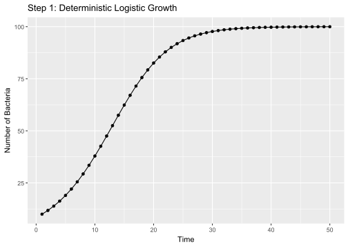

Stochastic models can conveniently be classified according to their contact structure (Britton et al., 2015):
Global: no structure, often referred to as homogeneous mixing. Individuals’ probabilities of interaction do not depend on their location in the population.
Network: Any individual-based epidemic model can be thought of as a network or random graph: with individuals as nodes, and infection of one by another as a link.
Metapopulation: The population is partitioned into non-overlapping groups, e.g. households; individuals have one contact rate with individuals in different groups, and another (higher) rate for individuals in the same group. More general metapopulation models allow an individual to belong to several different types of group, each with its own contact rate, or allow more levels of mixing.
Spatial: vary from simple lattices with only nearest–neighbour interactions, for which some theoretical analysis is possible, to complex models with long-distance interactions, for which only qualitative and approximate results are known. A key feature of spatial models is that they display slower than exponential growth, even in their earliest stage; this makes it difficult to approximate them adequately by deterministic models, and even to define threshold parameters.
Have I run enough simulations?
The optimal number of simulations is reached when results stabilize, showing approximate convergence. This means additional simulations don’t significantly change the outcome. See 8.1.2.2 Multiple simulations for a demonstration of this convergence.
Steps to calculate the needed number of simulations (source):
Run the simulation with a default number of runs \(R_0\) (usually \(R_0 = 1000\)). Now you should have a vector with the results \(x_0\) where \(\text{length}(x_0) = R_0\).
Calculate the mean value \(\overline{x_0}\) and standard deviation \(\sigma_0\).
Specify the allowed level of error \(\epsilon\) and the uncertainty \(\alpha\) you are willing to accept. Normally you choose \(\epsilon = \alpha = 0.05\%\).
Use this equation to get the required number of simulations:
Use the Student t-distribution rather than the normal distribution for small \(R_0\).
the output doesn’t change much if the model was run with more simulations
library(odin)library(dde)library(tidyverse)
── Attaching core tidyverse packages ──────────────────────── tidyverse 2.0.0 ──
✔ dplyr 1.1.4 ✔ readr 2.1.5
✔ forcats 1.0.0 ✔ stringr 1.5.1
✔ ggplot2 3.5.1 ✔ tibble 3.2.1
✔ lubridate 1.9.3 ✔ tidyr 1.3.1
✔ purrr 1.0.2
── Conflicts ────────────────────────────────────────── tidyverse_conflicts() ──
✖ dplyr::filter() masks stats::filter()
✖ dplyr::lag() masks stats::lag()
ℹ Use the conflicted package (<http://conflicted.r-lib.org/>) to force all conflicts to become errors
sir_sto <-odin({## Core equations for transitions between compartments:update(S) <- S - n_SIupdate(I) <- I + n_SI - n_IRupdate(R) <- R + n_IR## Individual probabilities of transition: p_SI <-1-exp(-beta * I / N) # S to I p_IR <-1-exp(-gamma) # I to R## Draws from binomial distributions for numbers changing between## compartments: n_SI <-rbinom(S, p_SI) n_IR <-rbinom(I, p_IR)## Total population size N <- S + I + R## Initial states:initial(S) <- S_iniinitial(I) <- I_iniinitial(R) <-0## User defined parameters - default in parentheses: S_ini <-user(1000) I_ini <-user(1) beta <-user(0.2) gamma <-user(0.1)})
Loading required namespace: pkgbuild
Generating model in c
ℹ Re-compiling odine7e97b61 (debug build)
── R CMD INSTALL ───────────────────────────────────────────────────────────────
- The project is out-of-sync -- use `renv::status()` for details.
* installing *source* package 'odine7e97b61' ...
** using staged installation
** libs
using C compiler: 'gcc.exe (GCC) 13.2.0'
gcc -I"C:/PROGRA~1/R/R-44~1.2/include" -DNDEBUG -I"C:/rtools44/x86_64-w64-mingw32.static.posix/include" -O2 -Wall -gdwarf-2 -mfpmath=sse -msse2 -mstackrealign -UNDEBUG -Wall -pedantic -g -O0 -c odin.c -o odin.o
odin.c: In function 'odin_metadata':
odin.c:119:18: warning: unused variable 'internal' [-Wunused-variable]
119 | odin_internal *internal = odin_get_internal(internal_p, 1);
| ^~~~~~~~
odin.c: In function 'user_get_scalar_int':
odin.c:206:47: warning: format '%d' expects argument of type 'int', but argument 2 has type 'const char *' [-Wformat=]
206 | Rf_error("Expected scalar integer for '%d'", name);
| ~^ ~~~~
| | |
| int const char *
| %s
gcc -I"C:/PROGRA~1/R/R-44~1.2/include" -DNDEBUG -I"C:/rtools44/x86_64-w64-mingw32.static.posix/include" -O2 -Wall -gdwarf-2 -mfpmath=sse -msse2 -mstackrealign -UNDEBUG -Wall -pedantic -g -O0 -c registration.c -o registration.o
gcc -shared -static-libgcc -o odine7e97b61.dll tmp.def odin.o registration.o -LC:/rtools44/x86_64-w64-mingw32.static.posix/lib/x64 -LC:/rtools44/x86_64-w64-mingw32.static.posix/lib -LC:/PROGRA~1/R/R-44~1.2/bin/x64 -lR
installing to C:/Users/ongph/AppData/Local/Temp/RtmpgbVEUP/devtools_install_5b9049ca2753/00LOCK-file5b9054654821/00new/odine7e97b61/libs/x64
* DONE (odine7e97b61)
`summarise()` has grouped output by 't'. You can override using the `.groups`
argument.
ggplot() +# geom_line(data = df_plot, mapping = aes(x = t, y = value, group = interaction(iter, comp), color = comp), alpha = 0.1) +geom_line(data = df_mean, mapping =aes(x = t, y = mean_value, color = comp), linewidth =2)

sir_deter <-odin({## Core equations for transitions between compartments:update(S) <- S - n_SIupdate(I) <- I + n_SI - n_IRupdate(R) <- R + n_IR## Individual probabilities of transition: p_SI <-1-exp(-beta * I / N) # S to I p_IR <-1-exp(-gamma) # I to R## Draws from binomial distributions for numbers changing between compartments: n_SI <- S * p_SI n_IR <- I * p_IR## Total population size N <- S + I + R## Initial states:initial(S) <- S_iniinitial(I) <- I_iniinitial(R) <-0## User defined parameters - default in parentheses: S_ini <-user(1000) I_ini <-user(1) beta <-user(0.2) gamma <-user(0.1)})
Generating model in c
ℹ Re-compiling odinb49fc372 (debug build)
── R CMD INSTALL ───────────────────────────────────────────────────────────────
- The project is out-of-sync -- use `renv::status()` for details.
* installing *source* package 'odinb49fc372' ...
** using staged installation
** libs
using C compiler: 'gcc.exe (GCC) 13.2.0'
gcc -I"C:/PROGRA~1/R/R-44~1.2/include" -DNDEBUG -I"C:/rtools44/x86_64-w64-mingw32.static.posix/include" -O2 -Wall -gdwarf-2 -mfpmath=sse -msse2 -mstackrealign -UNDEBUG -Wall -pedantic -g -O0 -c odin.c -o odin.o
odin.c: In function 'odin_metadata':
odin.c:119:18: warning: unused variable 'internal' [-Wunused-variable]
119 | odin_internal *internal = odin_get_internal(internal_p, 1);
| ^~~~~~~~
odin.c: In function 'user_get_scalar_int':
odin.c:204:47: warning: format '%d' expects argument of type 'int', but argument 2 has type 'const char *' [-Wformat=]
204 | Rf_error("Expected scalar integer for '%d'", name);
| ~^ ~~~~
| | |
| int const char *
| %s
gcc -I"C:/PROGRA~1/R/R-44~1.2/include" -DNDEBUG -I"C:/rtools44/x86_64-w64-mingw32.static.posix/include" -O2 -Wall -gdwarf-2 -mfpmath=sse -msse2 -mstackrealign -UNDEBUG -Wall -pedantic -g -O0 -c registration.c -o registration.o
gcc -shared -static-libgcc -o odinb49fc372.dll tmp.def odin.o registration.o -LC:/rtools44/x86_64-w64-mingw32.static.posix/lib/x64 -LC:/rtools44/x86_64-w64-mingw32.static.posix/lib -LC:/PROGRA~1/R/R-44~1.2/bin/x64 -lR
installing to C:/Users/ongph/AppData/Local/Temp/RtmpgbVEUP/devtools_install_5b901c843060/00LOCK-file5b907908519d/00new/odinb49fc372/libs/x64
* DONE (odinb49fc372)
ℹ Loading odinb49fc372
sir <- sir_deter$new()res <-data.frame(sir$run(0:100))colnames(res)[1] <-"t"df_plot <- res |>pivot_longer(cols =-t, names_to ="comp")ggplot() +geom_line(data = df_plot, mapping =aes(x = t, y = value, color = comp))

Britton, T., House, T., Lloyd, A. L., Mollison, D., Riley, S., & Trapman, P. (2015). Five challenges for stochastic epidemic models involving global transmission. Epidemics, 10, 54–57. https://doi.org/10.1016/j.epidem.2014.05.002